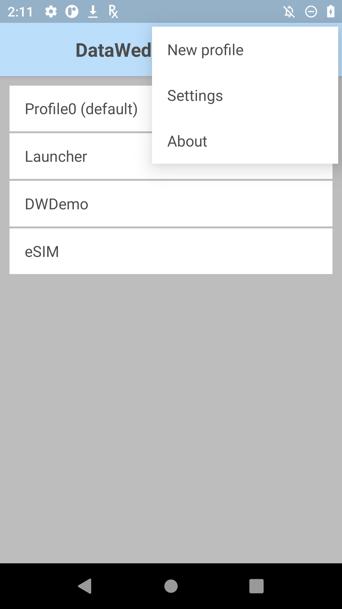
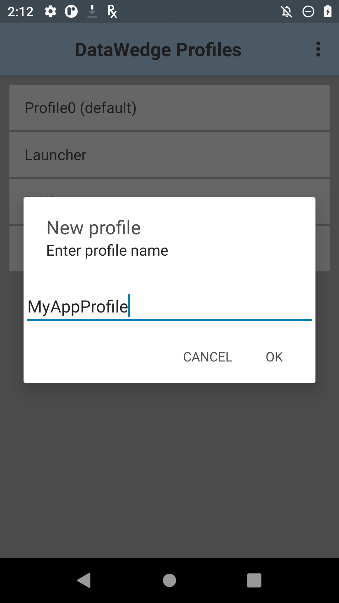
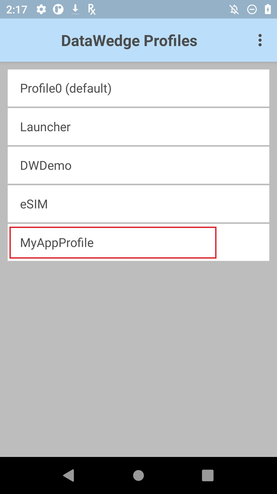
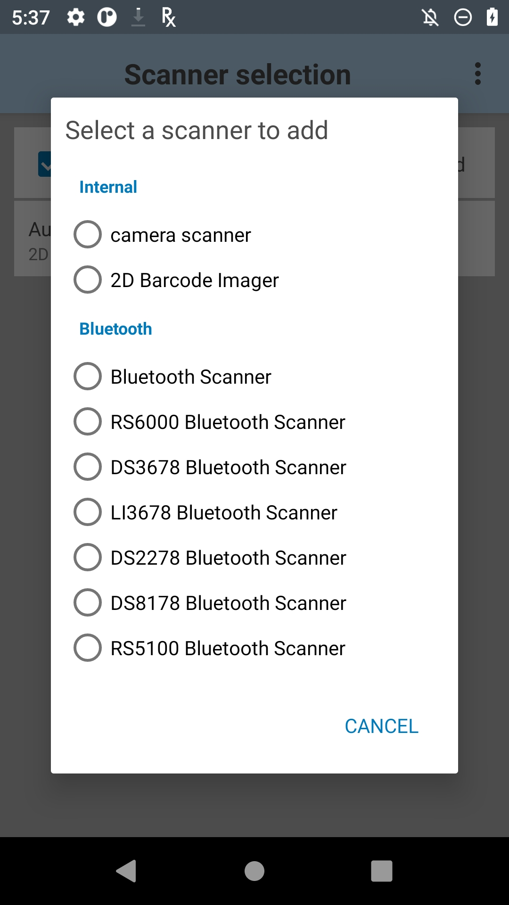
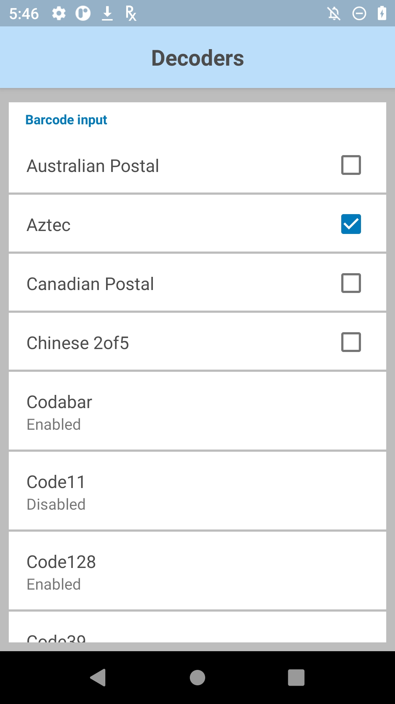

概要
DataWedge には、デバイス上の任意のアプリを関連付けることができ、バーコード、磁気ストライプ、その他のデータを取得して、指定した方法でデータを処理し、それを 1 つ以上のアプリに渡すように求めることができます。したがって、各プロファイルでは、次の 3 つを指定する必要があります。
入力デバイスで、バーコード、磁気ストライプ、RFID (無線周波数識別) タグ、シリアル ポート、音声、または SimulScan からデータを取得するかどうかを決定します。
出力メソッドで、データをキーストロークとして、インテント内または IP ネットワーク経由、あるいはその両方で渡すかどうかを指定します。
詳細については、「DataWedge API」を参照してください。
新しいプロファイルの作成
新しいプロファイルの作成 (デバイスの画面は、デバイス システムと DataWedge のバージョンによって異なる場合がある):
DataWedge 7.x の起動プログラム アイコンを以下に示します。DataWedge アイコンを探し、タップして開始します。
DataWedge 7.x の起動プログラム アイコン
新規インストール時に、DataWedge プロファイル画面は下図のように表示され、付属する 3 つの (表示可能な) プロファイルが示されます。白色のテキストは、有効なプロファイルを示します。また、4番目の無効なプロファイル (グレーのテキスト) もありますが、初期状態では表示されません。
注: 前に DataWedge を開いていた場合は、最後に使用した画面に戻ります。必要に応じて、プロファイル画面が表示されるまで [戻る] を押します。
2.「3 本線」メニューをタップし、[新規プロファイル] を選択します。

3.新しいプロファイルの名前を入力し、[OK] をタップします。以下の手順 4 の図と同様のプロファイル リストが表示されます。
 プロファイル名は一意で、英数字を使用し、プロファイルのインポート/エクスポート問題を回避するために短くすることが推奨されています。
プロファイルをアプリやアクティビティに関連付けます。
4.関連付けるプロファイルをタップします。
5.プロファイル画面で [プロファイル有効] チェックボックスをタップして有効にし、[関連アプリ] をタップしてアプリまたはアクティビティにリンクします。
6.メニューをタップして、[新規アプリとアクティビティ] を選択します。デバイスにインストールされているすべてのアプリとアクティビティのリストが表示されます。
7.デバイスのアプリ/アクティビティ リストから、編集中のプロファイルに関連付けるアプリまたはアクティビティを選択します。アプリを選択すると、そのアクティビティ リストが表示されます (ステップ 8 を参照)。
8.アプリ/アクティビティ リストで、アスタリスクをタップして、すべてのアプリアクティビティをプロファイルに関連付けるか、または個々のアクティビティをタップして、その特定のアクティビティのみに DataWedge を使用します。
9.これで、以下のように、プロファイル関連付けリストにアプリが表示されます。目的のアプリやアクティビティがすべて関連付けられるまで、手順 6 ～ 9 を繰り返します。 :.関連付けの追加が完了したら、戻るボタンをタップしてプロファイル画面に戻ります。
:.関連付けの追加が完了したら、戻るボタンをタップしてプロファイル画面に戻ります。
;.作成された新しいプロファイルに対して、[プロファイル有効] のチェックボックスがオンになっていることを確認します。
<.必要に応じて、バーコード入力とキーストローク出力が有効になっていることを確認します。
入力、処理、および出力用のプロファイルの構成:
10.プロファイル画面で、目的の入力デバイス (必要に応じて下にスクロール) を有効にします。たとえば、バーコード入力にスキャナ選択のオプションが表示されます。
11.スキャナ選択画面で、目的のスキャナまたはイメージャを選択します。[戻る] をタップして、入力画面に戻ります。注: 上記のようなリストには、構成されているユニットに存在する (またはユニットに接続されている) デバイスのみが表示されます。関連情報については、「バーコード入力」ガイドの「スキャナ選択」を参照してください。
12.[デコーダ] 画面 (入力画面からアクセス可能) で、スキャン性能を最適化するために、アプリケーションが必要とするデコーダのみを選択します。[戻る] をタップして、入力画面に戻ります。デコーダ パラメータの構成の詳細については、「バーコード入力」ガイドを参照してください。
13.プロファイル画面で、目的の出力メソッド (必要に応じて下にスクロール) を選択します。たとえば、以下の図は、キーストローク出力が有効になっていることを示しています。
 |
注: 出力セクションには、「基本データ形式」および「高度なデータ形式」を構成するためのセレクタが含まれています。これらは、データ処理のオプションです。
14.特殊なキーストロークを挿入するオプション、または収集したデータの前 (プリフィックス) や後 (サフィックス) にテキストを追加するオプションでは、[基本データ形式] を選択します。

取得したデータの処理の詳細については、「基本データ形式」および「高度なデータ形式」を参照してください。
これで、アプリでのバーコード データの取得に DataWedge を使用するようになりました。
プロファイルの編集
プロファイルの変更、名前変更、削除、または複製:
1.プロファイル名を長押しして、そのコンテキスト メニューを表示します。
2.目的のアクションをタップします。
プロファイルの編集は、プロファイル リストのプロファイル名をタップして開始することもできます。
関連ガイド:
- プロファイル - DataWedge でのプロファイルの使用方法を説明し、使用可能なプロファイル オプションの一覧を示します
- DataWedge API - プログラムによる DataWedge へのアクセス